The Honeycomb Book


Statement of need
Honeycomb aims to provide a safe, efficient and scalable implementation of combinatorial maps for meshing applications.
The goal is to converge towards a (or multiple) structure(s) which could be used to easily experiment with parallel meshing algorithm, specifically targeting many-core architectures.
More extensive explanations regarding our needs and design choices of this solution is included in one of our paper.
Requirements
Core
- Rust stable release
- The MSRV may not be the latest stable release, but we do not give any guarantees for older versions compatibility
Optional
- CUDA
- Used in one of the application, as a PoC for GPU usage
nvccandlibcudartmay be sufficient, but we recommend installing the full toolkit
- hwloc
- The library is used by the application binaries to bind threads to physical cores;
- Consider this a core requirement if you are running benchmarks
- Disable usage by compiling application binaries with the
--no-default-featuresoption
Quickstart
You can add honeycomb as a dependency of your project by adding the following lines
to its Cargo.toml:
# [dependencies]
honeycomb = {
git = "https://github.com/LIHPC-Computational-Geometry/honeycomb",
tag = "0.12.0" # it is highly encouraged to pin version using a tag or a revision
}
Alternatively, you can add the sub-crates that are currently published on crates.io:
# [dependencies]
honeycomb-core = "0.12.0"
honeycomb-kernels = "0.12.0"
honeycomb-render = "0.12.0"
Note that the documentation hosted on GitHub corresponds to the master branch. Versioned documentation is available on docs.rs.
Combinatorial maps
Combinatorial maps are combinatorial, graph-like, data structures which can be seen as the formalization of half-edges to higher dimensions. They can be used in dimension two and three for mesh representation, including both surface and volume 3D meshing.
Roughly speaking, a map is simply a set of abstract elements, called darts, augmented with functions defined on this set of darts, which describe topological relations between them. This section presents the notions useful to understand maps, as they are the mai structure offered by the library.
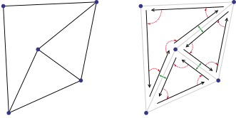
All of the definitions we present in this section are based on G. Damiand and P. Lienhardt Combinatorial Maps: Efficient Data Structures for Computer Graphics and Image Processing; The reader may refer to this book for more details.
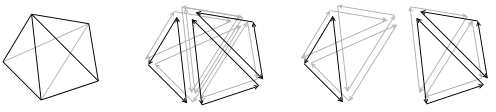
Components
Preliminary notions
Let \(F, G\) be finite sets of elements. Let \(f\) an application defined on \(F\) to \(G\).
Definition: Permutation
\(f: F \rightarrow G\) is a permutation if and only if \(f\) is a bijection and \(F = G\), i.e.,\(f\) is a one-to-one mapping from \(F\) to \(F\).
Definition: Involution
\(f: F \rightarrow F\) is an involution if it is a permutation and is its own inverse, i.e., \(f\) is a one-to-one mapping from \(F\) to \(F\), and \(f = f^{-1}\).
Let \(\emptyset\) denote a null element. Let \(F’ = F \cup { \emptyset }\).
Definition: Partial permutation
\(f’: F’ \rightarrow F’\) is a partial permutation if \(f’(\emptyset) = \emptyset\) and \(\forall x,y \in F, f’(x) = f’(y) \ne \emptyset \Rightarrow x = y\).
Definition: Partial involution
\(f’: F’ \rightarrow F’\) is a partial involution if it is a partial permutation and \(\forall x \in F, f’(x) = \emptyset\) or \(f’(x) \ne \emptyset \Rightarrow f’(f’(x)) = x\).
Combinatorial maps
Let \( N \in \mathbb{N} \). An \(N\)-dimensional map is defined as follows:
Definition: Combinatorial map
\(N\)-dimensional combinatorial maps, or \(N\)-maps, are an \((N+1)\)-tuple \((D, \beta_1, …, \beta_N)\) such that:
- \(D = \lbrace d_i \rbrace_i\) is a finite set of darts,
- \(\forall j \in [ 1; N ], \beta_j\) is a function from \(D\) to \(D\) defining topology of the space.
Darts
Darts are the finest grain composing combinatorial maps. The structure of the map is given by the relationship between darts, defined through beta functions. Additionally, a null dart is defined, we denote it \(d_0 = \emptyset\).
In our implementation, darts exist implicitly through indexing and their associated data. There are no dart objects in a strict sense, there is only a given number of dart, their associated data stored using arrays, and a record of “unused” slots that can be used for dart insertion. Because of this, we assimilate dart and dart index.
Beta functions
Each combinatorial map of dimension N defines N beta functions linking the set of darts together. These functions model the topology of the map, giving information about connections of the different cells of the mesh. They verify the following properties:
- \(\beta_1\) is a partial permutation on \(D\).
- \(\forall i \ge 2, \beta_i\) is a partial involution on \(D\).
- \(\forall i \in [1;N-2], \forall j \in [i+2; N], \beta_i \circ \beta_j\) is a partial involution on \(D\).
Additionally, we define \(\beta_0\) as the inverse of \(\beta_1\). This comes from a practical consideration for performances and efficiency of the implementation.
Examples
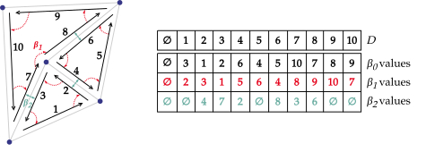
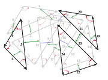
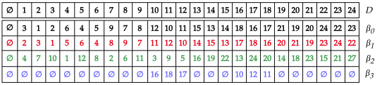
Cell representation
Orbits
In our \(2\)-map example, applying \(\beta_1\) recursively to \(d_1\) makes us cycle through darts \(d_1\), \(d_2\), \(d_3\), that belong to different edges. Applying \(\beta_2\) to \(d_6\) makes us cycle between \(d_6\) and \(d_8\), both belonging to different faces. This set of darts accessible from a starting dart via a given \(\beta_i\) function is called orbit.
Definition: Orbit
We call orbit of \(d\) by \( \lbrace f_1, f_2, …, f_k \rbrace \) and denote \( \langle f_1, f_2, …, f_k \rangle (d)\) the set of darts retrievable from \(d\) using any composition of \(f_1, f_2, …, f_k\), including recursions. In other words, \( \langle f_1, f_2, …, f_k \rangle (d)\) refers to the set of darts connected to \(d\), via the \(f_1, f_2, …, f_k\) functions.
The set is obtained by doing a Breadth First Search algorithm from the starting dart \(d\), where each connected node is the image of the current dart via one function \(f \in \lbrace f_1, f_2, …, f_k \rbrace\). The order in which nodes are explored is determined by the order of the function set.
For example, the orbit \(\langle \beta _2 \rangle (d)\) refers to the subset of unique darts accessible from dart \(d\) using any composition of \(\beta_2\), including recursive ones. The orbit \(\langle \beta_1, \beta_0 \rangle (d_7)\) refers to darts accessible from dart \(d_7\) using any composition of \(\beta_1\) and \(\beta_0\). The computation process is detailed below.
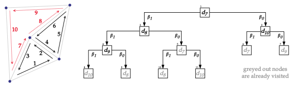
\(i\)-cells
Specific values of orbits can be used to define the cells commonly used in meshing algorithms. These specific values are referred to as \(i\)-cells. For example the subset of dart defined by \( \langle \beta_1 \rangle (d)\) corresponds to darts of a face, i.e., a \(2\)-cell. The subset of dart defined by orbit \( \langle \beta_2 \rangle (d)\) corresponds to darts of an edge, i.e., a \(1\)-cell.
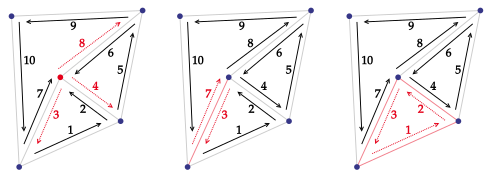
Definition: \(0\)-cell
Let \(d \in D\). The \(0\)-dimensional cell associated to dart \(d\) is \( \langle { \beta_j \circ \beta_k, 1 \le j < k \le N } \rangle (d)\).
Definition: \(i\)-cell, \(i \ne 0\)
Let \(d \in D\). The \(i\)-dimensional cell associated to dart \(d\) is \(\langle \beta _1, …, \beta _{i-1}, \beta _{i+1}, …, \beta _N \rangle (d)\).
Our interest lies in mesh representation, so we use these definitions applied to dimension 2 and 3.
| i | Geometry | 2-map | 3-map |
|---|---|---|---|
| 0 | Vertex | \( \langle \beta_1 \circ \beta_2 \rangle (d)\) | \(\langle \beta_1 \circ \beta_2, \beta_1 \circ \beta_3, \beta_2 \circ \beta_3 \rangle (d)\) |
| 1 | Edge | \(\langle \beta_2 \rangle (d)\) | \(\langle \beta_2, \beta_3 \rangle (d)\) |
| 2 | Face | \(\langle \beta_1 \rangle (d)\) | \(\langle \beta_1, \beta_3 \rangle (d)\) |
| 3 | Volume | - | \(\langle \beta_1, \beta_2 \rangle (d)\) |
Embedding
In order to use \(N\)-maps to represent meshes, we need to at least associate coordinates to topological vertices (i.e. \(0\)-cells). The function that associates arbitrary data (referred to as attributes) to \(i\)-cell is called the embedding function; It relates to the mathematical notion of embedding and the existence of an injective, structure-preserving application between two spaces.
Definition: Embedding
An embedding of map \(M\) into \(E\) is an application \(f\) from the set of cells of \(M\) onto \(E\) which preserve the structure of \(M\), i.e., each \(i\)-cell of \(M\) is associated with an \(i\)-dimensional part of \(E\) so that incident cells of \(M\) are associated to incident parts of \(E\).
This is a very general definition which leaves a lot of room for implementation choices. We designed our system with robustness in mind, as we found issues within attribute handling in existing implementations (a lack of formalization surrounding attribute behavior, mostly).
Our implementation supports arbitrary attribute binding, provided that they are uniquely typed and satisfy the trait constraints required by the attribute manager.
Implementation
Because embedded data is defined per-application or per-needs, our combinatorial map implementation uses a generic system to handle this. We do not store cell identifiers in collection, and instead compute identifiers as needed for data access.
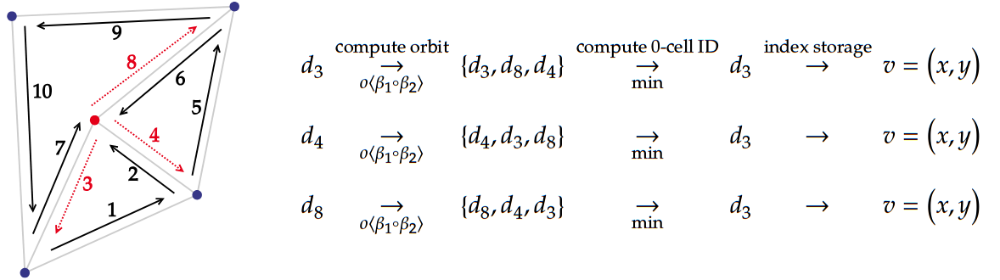
Identifiers are used to index specific attribute storages, which are distinguished using attribute type signatures. This notably implies that all attributes must be uniquely typed. For more information, consult the API documentation of the following items:
AttributeBindtrait,AttributeUpdatetrait,AttributeStoragetrait,UnknownAttributeStoragetrait,AttrStorageManagerstruct (private, go to source code or use--document-private-itemsoption).
All are defined in the honeycomb_core::attributes module.
Element insertion and deletion
Two main operations are defined to modify combinatorial maps, sew and unsew. Four additional operations are defined in order to construct maps.
One can increase or decrease dimension of a map, and add or remove darts from a map. Dimension change corresponds to adding or removing a \(\beta\) function of the highest dimension, while dart addition or deletion corresponds to adding or removing an element from \(D\).
Dart insertion
In our implementation, darts exist implicitly through indexing of the internal storage structures of the map. Because of this, adding darts translates to extending internal vectors and storages in our implementation.
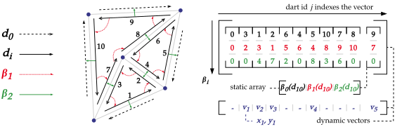
An internal counter is incremented at each dart addition. This, coupled with an unused dart tracking mechanism, constitutes a way to keep track of attributed darts.
Dart deletion
Removing a dart would technically require us to remove an entry inside storage structures, which are ordered, contiguous vectors. There are two way to approach this problem:
- Actually remove the entry
- requires adjustments on all the structure to keep consistent indices
- keeps the storage compact, i.e. all allocated slots are used
- “Forget” the entry
- does not require any re-arrangements besides making sure no beta functions lands on the dart
- creates “holes” in the storage
Our implementation uses the second solution, along with a mark system for unused darts. In turns, we can use these “holes” in the storage to reinsert new element or collapse the structure at a later point during execution.
Add / Remove a dimension
Adding or removing a dimension on a given combinatorial maps effectively corresponds, respectively, to adding or removing a beta function. In the case of decreasing the dimension, this operation can result in two disjoint dart set in the same map.
This is not implemented in the library as we haven’t found any real use case for the operation.
If ever needed, it could be implemented using the TryFrom trait provided by the Rust language.
Sewing operation
Sew and unsew operations update the beta function values to modify the topological relation between two or more darts. An \(i\)-dimensional sew can be interpreted as creating a connection between two \(i\)-dimensional cells. That connection takes the form of an adjacency, and the definition of the operation ensures that local structure remains consistent (in particular, cells incident to the new adjacency).
We present a simplified overview of the operations here, as their formal definitions in \(N\)-dimension do not really contribute to library understanding and usage.
Sewing
The sew operation can be divided into two parts:
- a topological update, which corresponds to a \(\beta\) function update to model a new topological relation
- a geometrical update, which corresponds to an update of the affected embedded data (attributes)
We call \(i\)-link the sub-operation corresponding to the topological update; Our implementation provide it along with sews due to performance and flexibility concerns.
Topology
The \(i\)-link operation corresponds to the aforementioned topological update. Given two darts \(d_a\) and \(d_b\), the \(i\)-link operation will update of the \(\beta_i\) function in order to model the new connection(s).
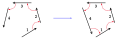
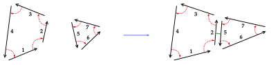
The definition of the new \(\beta_i\) function depends on the dimension of the link; \(1\)-link has a different definition than \(i\)-links, \(i \ge 2\).
The operation is valid only if the respective orbit of the two darts are mappable by a bijection; In practice, this corresponds to a very intuitive condition illustrated below.
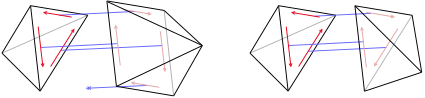
Geometry
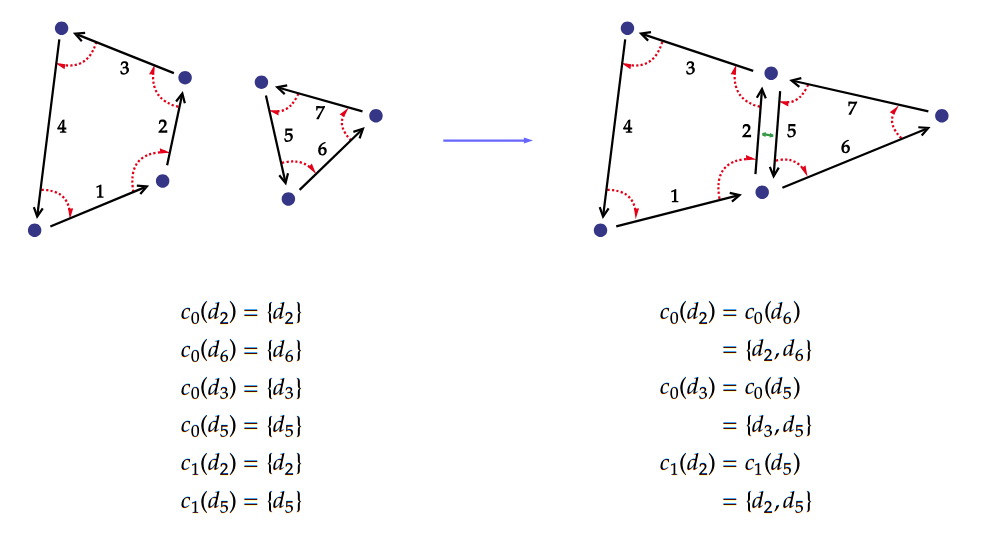
The i-sew operation corresponds to an i-link operation, coupled with an update of the affected attributes. This update is necessary as the topological update can modify the composition
How the attributes are updated is defined through trait implementation in the Rust crate (see Embedding). Which attributes are updated can be deduced from the dimension \(i\) of the sewing operation. This is summarized in the following table:
| Dimension | Geometrical operation | 0-cell / Vertex Attributes | 1-cell / Edge Attributes | 2-cell / Face Attributes | 3-cell / Volume Attributes |
|---|---|---|---|---|---|
| 1 | Fusing vertices | affected | unaffected | unaffected | unaffected |
| 2 | Fusing edges | affected | affected | unaffected | unaffected |
| 3 | Fusing faces | affected | affected | affected | unaffected |
Unsewing
The unsew operation is the inverse to the sew operation. It behaves according to similar properties, but is used to remove links between darts. It does so by replacing values of the \(\beta\) functions by the null dart. Geometrical updates are handled and defined in the same way as for the sew operation.
It also affects attributes similarly, but incident cells are split instead of merged.
Transactional memory
Meshing operations demand guarantees for coordinated access across sets of variables. They may also be composed of multiple steps that should not be interrupted, or where intermediate mesh state may be invalid.
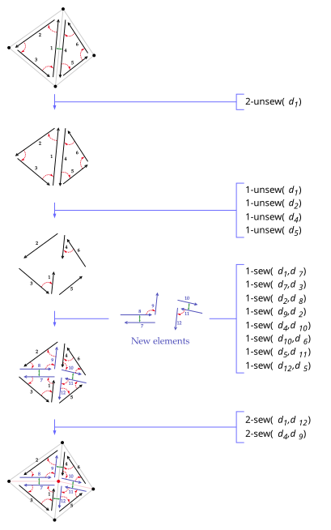
For example, an edge cut in a triangular mesh is defined by the insertion of a vertex on an existing edge, before the creation of two new edges that cut across the original adjacent triangles. After the first vertex insertion, and before both edges creation, the mesh actually contains quadrangular cells. This is a state that should not be visible to other threads, nor should it be a final state.
Needs
In order to guarantee validity, we must ensure that these intermediate, incorrect states aren’t used by another thread to compute an erroneous result, i.e., that all changes made in a thread appear at once to others. To obtain our final system, we worked incrementally on a synchronization policy choice.
Rust’s ownership semantics require us to add synchronization mechanism to our structure if we want to use it in concurrent contexts. Using primitives such as atomics and mutexes would be enough to get programs to compile, but it would respectively yield an incorrect or impractical implementation:
- Atomics give guarantees on instructions interleaving for a single given variable, these guarantees cannot be extended to a set of accesses across different variables.
- Mutexes (and similar locks, e.g. RWLocks) can be used to implement greater synchronization coordination: for example, we can write an operation that does not progress until all of the used data is locked. However, locks are error-prone, have very poor composability. Issues that come with those grow along the number of locks used.
We detail how these usual mechanisms fail to provide the guarantees we need in one of our paper.
Software Transactional Memory
We choose to use Software Transactional Memory (STM) to handle high-level synchronization of the structure. Unlike locks, STM has great composability and allows users of the crate to easily define pseudo-atomic segments in their own algorithms.
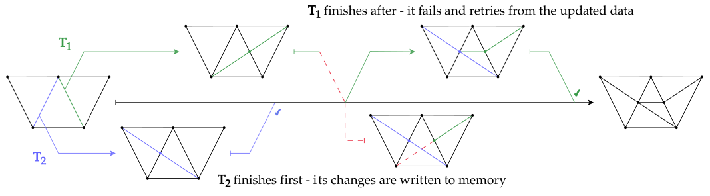
Exposing an API that allows users to handle synchronization also means that the implementation
isn’t bound to a given parallelization framework. Instead of relying on predefinite parallel
routines (e.g. a provided parallel_for on given cells), the structure can be used to implement
existing algorithms regardless of their approach (data-oriented, task-based, …).
Resources
This page groups a few references mentioned in this book, as well as others which help understand all mechanism leveraged in the framework.
Rust
- The Rust Programming Language book.
- Rust by Example book
- Rust’s standard library documentation
Combinatorial Maps
- G. Damiand and P. Lienhardt, Combinatorial Maps: Efficient Data Structures for Computer Graphics and Image Processing, A K Peters/CRC Press, Sept. 2014.
- G. Damiand and M. Teillaud, A Generic Implementation of dD Combinatorial Maps in CGAL, Procedia Engineering, 82 (2014), pp. 46–58.
- P. Kraemer, L. Untereiner, T. Jund, S. Thery, and D. Cazier, CGoGN: N-dimensional Meshes with Combinatorial Maps, in Proceedings of the 22nd International Meshing Roundtable, J. Sarrate and M. Staten, eds., Springer International Publishing, Cham, Oct. 2013, pp. 485–503.
Transactional Memory
- Dedicated STM chapter of Real World Haskell for a quick intuitive introduction
- Software Transactional Memory, Shavit et al., 1997
- On the correctness of transactional memory, Guerraoui et al., 2008
Algorithms
References are given on a case by case basis when it comes to algorithms. Some were loosely adapted from references while others were direct re-implementations.
Contributing
Contributions are welcome and accepted as pull requests on GitHub. Feel free to use issues to report bugs, missing documentation or suggest improvements of the project.
Environment
The repository contains a Nix flake to easily setup a development environment:
nix develop
Most notably, it handles hwloc install on both MacOs and Linux, as well as Linux-specific
dependencies for our visualizer (used by bevy).
Checks
Nix
The flake also defines checks. They are identical to those of the CI, so use this rather than the pre-commit if possible.
nix flake check
Pre-commit hook
The repository contains a pre-commit hook config file. To use it:
pip install pre-commit # or whichever package manager
pre-commit install
pre-commit run # test it!
While it is not identical to the CI (most notably, it excludes honeycomb-render due to compile time), it is fine
for core and kernel crates development.
The hook can be bypassed by using the --no-verify option to git commit.
Documentation
Note that a most of the code possess documentation, including private modules / items / sections. You can generate the complete documentation by using the following instructions:
# Book
mdbook serve --open user-guide/
# Rust API
cargo +nightly doc --all --all-features --no-deps --document-private-items
Project structure
The project root is organized using Cargo workspaces. The repository hosts both published crates (libraries) as well as complementary content such as benchmarks, examples or this guide.
The following libraries are available:
- honeycomb Main crate, which re-exports items from the three subcrates below
- honeycomb-core Core definitions and tools for combinatorial map implementation
- honeycomb-kernels Meshing kernel implementations using combinatorial maps
- honeycomb-render Visualization tool for combinatorial maps
The repository also hosts:
- The
applicationscrate, which contains a collection of algorithms which are used as benchmarks and/or examples. - This book’s source files, available in the
user-guidedirectory.
Libraries
The repository hosts four crates.
honeycomb
honeycomb is the main crate provided to users and serve as the entrypoint for combinatorial map usage. It is exclusively made up of re-exports from the core, kernels and render crate to provide a clean, all-in-one dependency.
At the moment, the honeycomb name is not available on crates.io; this means that using this crate requires adding
the dependency using the git repository:
# [dependencies]
honeycomb = {
git = "https://github.com/LIHPC-Computational-Geometry/honeycomb"
# tag = "X.X.X"
}
honeycomb-core
honeycomb-core is a Rust crate that provides basic structures and operations for combinatorial map manipulation. This includes map structures, methods implementation, type aliases and geometric modeling for mesh representation. The following features are available:
- a builder structure to handle map creation:
CMapBuilder. - 2D and 3D combinatorial maps, usable in concurrent contexts:
CMap2/CMap3. this includes:- all regular operations (sew, unsew, beta image accesses, …),
- a custom embedding logic to associate vertices and attributes to darts.
- abstractions over attributes, to allow arbitrary items binding to the map using the
same embedding logic as vertices:
AttributeBind&AttributeUpdatetraits,AttrSparseVecas a predefined collection for attributes,- additional traits to describe custom collection structures.
- geometry primitives:
Vector2/Vertex2,Vector3/Vertex3.
honeycomb-kernels
honeycomb-kernels is a Rust crate that provides implementations of meshing kernels using the core crate’s combinatorial maps. These implementations have multiple purposes:
- Writing code using \(N\)-maps from a user’s perspective
- Covering a wide range of operations, with routines that are more topology-heavy / geometry-heavy / balanced
- Stressing the data structure, to identify its advantages and its pitfalls in a meshing context
- Testing for more unwanted behaviors / bugs
When discussing algorithms, explanations provided in this guide focus on the high-level workflow; Implementation-specific details and hypothesis are kept to the documentation of the crate.
honeycomb-render
honeycomb-render is a Rust crate that provides a simple visualization framework to allow the user to render their combinatorial map. It is designed to be used directly in the code by reading data through a reference to the map (as opposed to a binary that would read serialized data). This render tool can be used to quickly debug algorithm results by looking at the resulting structure instead of reading hard-to-interpret raw data.
Use the exported functions to render a given combinatorial map.
You may need to run the program in release mode to render large maps. All items used to build
that tool are kept public to allow users to customize the render logic (e.g. to render a specific
attribute).
Applications
The applications crate contains multiple binaries which serve as benchmarks and examples for the
library. The following targets are defined:
| Algorithm | Target binary | Dimension |
|---|---|---|
| Delaunay triangulation | incremental-delaunay | 3D |
| Edge cut | cut-edges | 2D |
| Overlay grid (intersection-based) | grisubal | 2D |
| Overlay grid (refinement-based) | overlay-grid | 2D |
| Parameterized grid generation | generate-grid | 2D and 3D |
| Polygon triangulation | triangulate | 2D |
| Remeshing pipeline proxy-application | remesh | 2D |
| Vertex smooth | shift-vertices | 2D |
Most algorithms work on 2D meshes because the structure was implemented first in 2D. Nonetheless, the 3D structure is just as polished, and the 3D Delaunay triangulation was the most consequential algorithm in our optimization process as it highlighted issues that did not appear in 2D.
Each binary has a documented CLI, which can be printed using the --help option. Outputs can be
serialized, and, if the render feature is enabled, the output mesh will be displayed at the end
of the execution.
Delaunay triangulation
This is a 3D incremental Delaunay triangulation implementation. It roughly follows the algorithm presented in One machine, one minute, three billion tetrahedra, Marot et al, 2019. We do not implement boundary recovery, and focus on the benchmarking aspect by sampling point in a box-shaped domain and inserting them into a first basic triangulation.
Edge cut
This algorithm apply a basic edge cut operation to all edges of the mesh until a target length is reached.
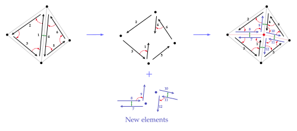
Overlay grid
Intersection-based
This mesh generation algorithms uses intersection with an overlaid grid to create a triangular mesh of a geometry passed as input.
Refinement-based
This mesh generation algorithms uses incremental refinement of an octree and its dualization to create an hexahedral mesh of the input geometry.
Parameterized grid generation
This is a grid generation algorithm for our structure, i.e., mesh instantiation with pre-definite values representing a grid.
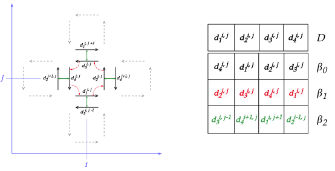
Elements of the grid can be indexed in a systematic manner. Thanks to this, we implemented an
efficient parallel version of this algorithm, as well as a GPU version which outperforms the
parallel CPU one. We use the cudarc crate to offload
the value generation to the GPU.
Polygon triangulation
This algorithm allows triangulation of simple 2D polygon using one of two methods:
ear-clipping or
fanning. The binary triangulates the entire
mesh input, while honeycomb-kernel provides the routine call used to triangulate a single cell.
Remeshing pipeline proxy-application
This algorithm is a proxy-application for very common remeshing workflow found in triangle or tetrahedron meshing. Multiple meshing kernels are applied in a loop until a certain predicate is satisfied, or for a given number of rounds.
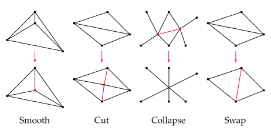
Vertex smooth
We implement two parameterized smoothing algorithm: Laplace smoothing and Taubin smoothing. A current work in progress includes a GPU-based Jacobi smoother using a Rust-Kokkos interoperability library.
(De)Serialization
Our crate implements two different serialization logics. We use a custom format for combinatorial map representation, while we use the VTK format for mesh representation. The latter can also be hijacked to initialize maps by restraining the range of supported data.
Serialization is available directly as map structures methods, while deserialization is available through the usage of the builder structure.
Usage
#![allow(unused)]
fn main() {
use std::{fs::File, io::Write};
use honeycomb_core::cmap::{CMap2, CMapBuilder};
// Init from a VTK file; only implemented for 2D map
let map: CMap2<f32> = match CMapBuilder::<2>::from_vtk_file("path/to/file.vtk").build() {
Ok(cmap) => cmap,
Err(e) => panic!("Error while building map: {e:?}"),
};
// Init from serialized data; implemented for 2D and 3
let map: CMap2<f32> = match CMapBuilder::<2>::from_cmap_file("path/to/file.cmap").build() {
Ok(cmap) => cmap,
Err(e) => panic!("Error while building map: {e:?}"),
};
// Save to VTK file; only implemented for 2D map
let file = File::create_new("out.vtk").unwrap();
map.to_vtk_binary(file);
// Serialize map data
let mut file = std::fs::File::create("out.cmap").unwrap();
let mut out = String::new();
map.serialize(&mut out);
file.write_all(out.as_bytes()).unwrap();
}Custom serialization
Format specification
The file should contain 4 sections:
[META]: header with miscellaneous data to help parsing / checking[BETAS]: values of beta functions[UNUSED]: unused darts[VERTICES]: vertex identifiers and values
Single line comments are supported using the # character.
META
Single line section specifying:
- format version,
- map dimension,
- number of darts.
The format version is the same as the crate’s version; it serves as a hint to use the correct crate version with a file you did not generate.
BETAS
Values of beta functions organized as one line per beta functions. The number of line should be equal to dimension plus one.
All lines should:
- have the same length
- have a length equal the number of darts specified in the header plus one (for the null dart)
Values on a single line are separated by a space, and the first value of each line should be 0
as they corresponds to beta images of the null dart.
UNUSED (optional)
Single line, optional section listing all unused darts. Unused darts should be free.
VERTICES
List of identifiers and corresponding vertex values. Vertices should have correct dimension (e.g. x, y, and z coordinates for a 3-map).
Examples
2D
# unit square
[META]
0.8.0 2 4 # <VERSION> <DIM> <N_DARTS_EXCL_0>
[BETAS] # 3 beta functions for 2D, 5 columns = 4 darts + the null dart
0 4 1 2 3 # b0
0 1 3 4 1 # b1
0 0 0 0 0 # b2
[VERTICES]
1 0.0 0.0 # <ID> <X> <Y>
2 1.0 0.0
3 1.0 1.0
4 0.0 1.0
3D
# simple tetrahedron
[META]
0.8.0 3 14
[BETAS]
0 3 1 2 6 4 5 9 7 8 12 10 11 0 0 # columns don't have to be aligned,
0 2 3 1 5 6 4 8 9 7 11 12 10 0 0 # though our routines will align items
0 4 7 10 1 12 8 2 6 11 3 9 5 0 0
0 0 0 0 0 0 0 0 0 0 0 0 0 0 0
[UNUSED]
13 14
[VERTICES]
1 0.0 0.0 0.0 # <ID> <X> <Y> <Z>
2 1.0 0.0 0.0
3 1.0 1.0 0.0
6 0.5 0.5 1.0
VTK serialization
We use the vtkio crate to handle file IO. Only the legacy
format is supported, in both its binary or ASCII form.
Expected input for deserialization
Using a VTK file to initialize a map can fail for two main reason:
- The file contains general inconsistencies:
- the number of coordinates cannot be divided by
3, meaning a tuple is incomplete - the number of
CellsandCellTypesisn’t equal, - a given cell has an inconsistent number of vertices with its specified cell type.
- the number of coordinates cannot be divided by
- The file contains unsupported data:
- file format isn’t Legacy,
- data set is something other than
UnstructuredGrid, - coordinate representation type isn’t
floatordouble, - mesh contains unsupported cell types (
PolyVertex,PolyLine, …, or anything 3D for a 2D map for example).
Generic attribute system
The attributes module of the core crate provides the necessary tools for to add custom attributes
to given orbits of the map. Each attribute should be uniquely typed (i.e. no type aliases) as the
maps’ internal storages use std::any::TypeId for identification.
An attribute struct should implement both AttributeBind and AttributeUpdate. It can then be
added to the map using the dedicated CMapBuilder method. This is showcased in n example below,
where we add
Implementation example
#![allow(unused)]
fn main() {
use honeycomb_core::{
attributes::{AttrSparseVec, AttributeBind, AttributeError, AttributeUpdate},
cmap::{OrbitPolicy, VertexIdType},
};
#[derive(Debug, Clone, Copy, Default, PartialEq)]
struct Weight(pub u32);
impl AttributeUpdate for Weight {
// when merging two weights, we add them
fn merge(attr1: Self, attr2: Self) -> Result<Self, AttributeError> {
Ok(Self(attr1.0 + attr2.0))
}
// when splitting, we do an approximate 50/50
fn split(attr: Self) -> Result<(Self, Self), AttributeError> {
// adding the % to keep things conservative
Ok((Self(attr.0 / 2 + attr.0 % 2), Self(attr.0 / 2)))
}
// if we have to merge from a single value, we assume the "other" is 0
fn merge_incomplete(attr: Self) -> Result<Self, AttributeError> {
Ok(attr)
}
}
impl AttributeBind for Weight {
// Weight values will be stored in an `AttrSparseVec`
type StorageType = AttrSparseVec<Self>;
// Weights bind to vertices
type IdentifierType = VertexIdType;
const BIND_POLICY: OrbitPolicy = OrbitPolicy::Vertex;
}
}Usage example
use honeycomb_core::cmap::{CMap2, CMapBuilder};
fn main() {
let map: CMap2<_> = CMapBuilder::<2, f64>::from_n_darts(4)
.add_attribute::<Weight>()
.build()
.unwrap();
let _ = map.link::<2>(1, 2);
let _ = map.link::<2>(3, 4);
map.write_vertex(2, (0.0, 1.0));
map.write_vertex(3, (1.0, 1.0));
map.write_attribute::<Weight>(2, Weight(5));
map.write_attribute::<Weight>(3, Weight(6));
let _ = map.sew::<1>(1, 3);
assert_eq!(map.read_attribute::<Weight>(2), Some(Weight(11)));
let _ = map.unsew::<1>(1);
assert_eq!(map.read_attribute::<Weight>(2), Some(Weight(6)));
assert_eq!(map.read_attribute::<Weight>(3), Some(Weight(5)));
}Parallel Laplace smoothing
In the following routine, we shift each vertex that’s not on a boundary to the average of its neighbors positions. In this case, transactions allow us to ensure we won’t compute a new position from a value that has been replaced since the start of the computation.
Code
use honeycomb_core::{
cmap::{CMap2, DartIdType, OrbitPolicy, VertexIdType, NULL_DART_ID},
geometry::Vertex2,
stm::atomically,
};
use honeycomb_kernels::grid_generation::GridBuilder;
use rayon::prelude::*;
const N_SQUARES: usize = 256;
const N_ROUNDS: usize = 100;
fn main() {
let map: CMap2<f64> = GridBuilder::<2, _>::unit_triangles(N_SQUARES);
// fetch all vertices that are not on the boundary of the map
let nodes: Vec<(VertexIdType, Vec<VertexIdType>)> = map
.iter_vertices()
.filter_map(|v| {
// the condition detects if we're on the boundary
if map
.orbit(OrbitPolicy::Vertex, v as DartIdType)
.any(|d| map.beta::<2>(d) == NULL_DART_ID)
{
None
} else {
// the orbit transformation yields neighbor IDs
Some((
v,
map.orbit(OrbitPolicy::Vertex, v as DartIdType)
.map(|d| map.vertex_id(map.beta::<2>(d)))
.collect(),
))
}
})
.collect();
// main loop
let mut round = 0;
loop {
// process nodes in parallel
nodes.par_iter().for_each(|(vid, neigh)| {
// we need a transaction here to avoid UBs, since there's
// no guarantee we won't process neighbor nodes concurrently
//
// the transaction will ensure that we do not validate an operation
// where inputs have changed due to instruction interleaving between threads
// here, it will retry the transaction until it can be validated
atomically(|tx| {
let mut new_val = Vertex2::default();
for v in neigh {
let vertex = map.read_vertex_tx(tx, *v)?.unwrap();
new_val.0 += vertex.0;
new_val.1 += vertex.1;
}
new_val.0 /= neigh.len() as f64;
new_val.1 /= neigh.len() as f64;
map.write_vertex_tx(tx, *vid, new_val)
});
});
round += 1;
if round >= N_ROUNDS {
break;
}
}
std::hint::black_box(map);
}Breakdown
The main map structure, CMap2, can be edited in parallel using transactions to ensure algorithm
correctness.
In the main computation loop, we use a transaction to ensure each new vertex value is computed from
the current neighbor’s values. The errors generated by read_vertex_tx and write_vertex_tx are
used to detect any changes to the data used in the transaction, here, the list of neigh vertices.
At the end of the transaction block, the commit routine will check if any used data has been altered. If not, results of the transaction will be validated and written to memory.
License
The following notice only applies to this book. For the library’s license, refer to the repository.
This work, including all text and figures, is licensed under Creative Commons Attribution 4.0 International (CC BY 4.0). You are free to share and adapt the material for any purpose, provided you give appropriate credit, link to the license, and indicate if changes were made.